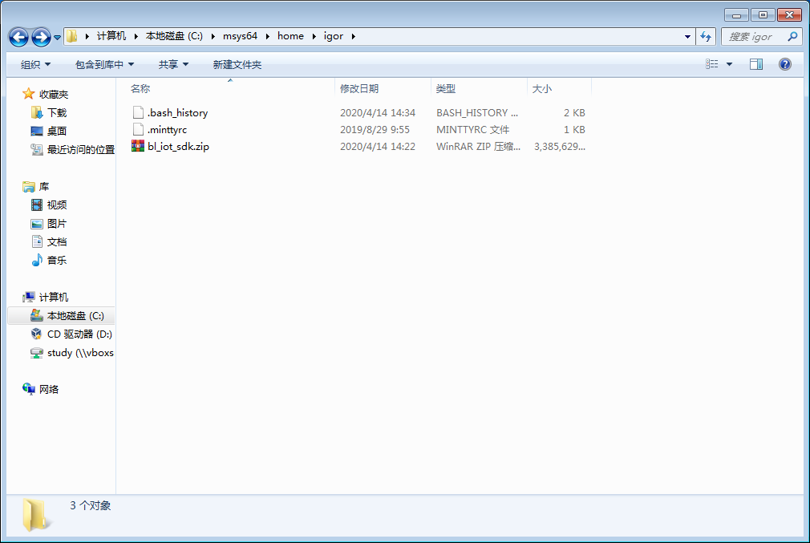
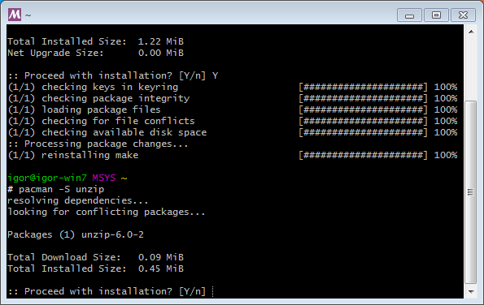
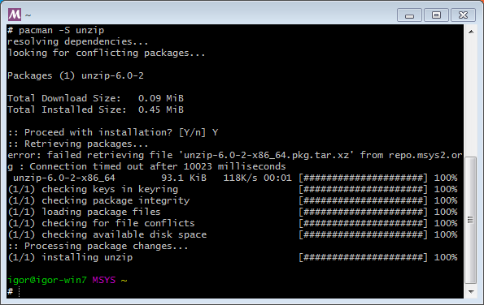
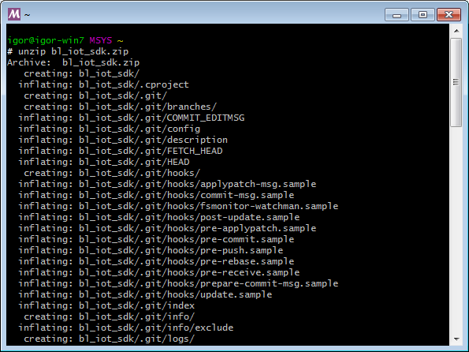
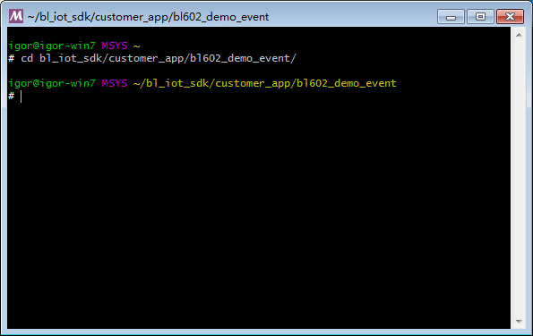
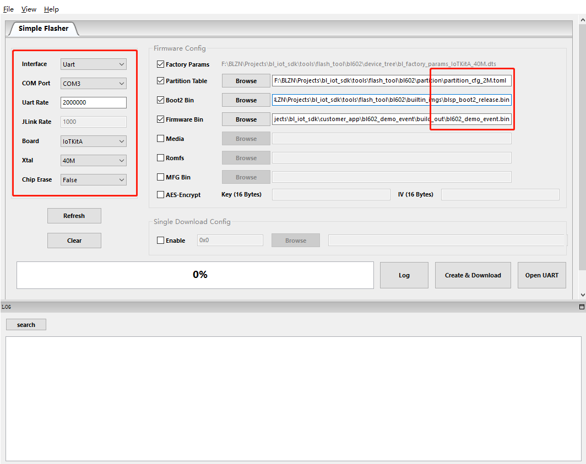
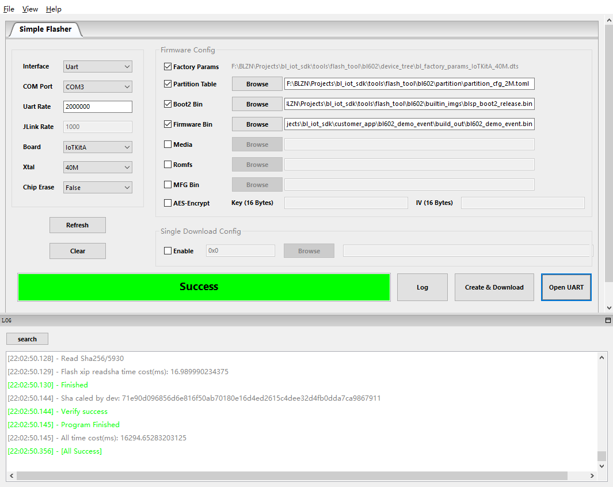
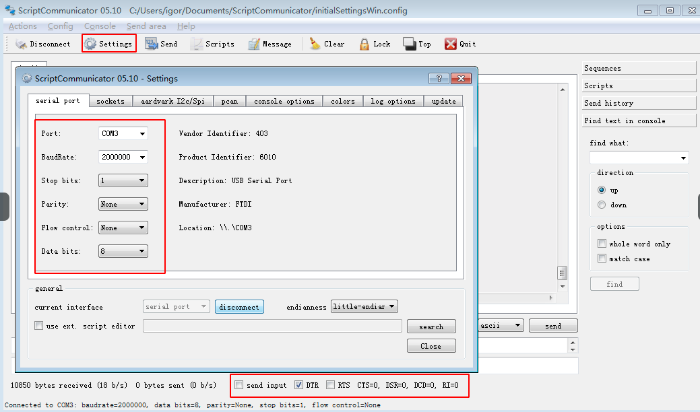

BL602 SDK Starter Guide
本文档旨在指导用户搭建 BL602硬件开发的软件环境。
编译环境的建立及代码的获取
安装串口工具，此处选用的 ScriptCommunicator
打开MSYS2并安装make，输入命令：
pacman -S make后回车，并根据提示直到安装完成

打开MSYS2的安装目录并将SDK源代码放入
home目录中的用户名文件夹下，下图中为igor文件夹注意：实例中使用的账户是
igor，实际操作时可以根据home目录下的文件名确定当前用户名安装解压软件，命令：
pacman -S unzip，还可选安装如下组件：pacman -S git、pacman -S tmux等对源文件压缩包进行解压，命令：
unzip bl_iot_sdk.zip注意：
unzip之后文件名需要根据实际拿到的SDK文件名作出相应的修改
硬件连接
模块的相关引脚连接如下图所示，其中图一是模块的正面图，其标号1处用跳线帽短接，标号2处将左边两根排针短接，标号3处将上面的两根排针短接；图二是模块的背面图，将 IO8 和 LOW 两根排针短接。


代码的编译和烧录
进入需要编译的工程目录，命令：
cd customer_app/bl602_demo_event进行编译，命令：
./genromap
bin文件下载
打开
bl_iot_sdk/tools/flash_tool文件中的BLDevCube.exe程序chip type选择BL602/604，打开后界面参数参考下图配置：点击
Create & Download，出现如下图所示表明下载成功：打开串口终端，点击
Settings配置为如下图所示，其中DTR需要勾选上，RTS不勾选。